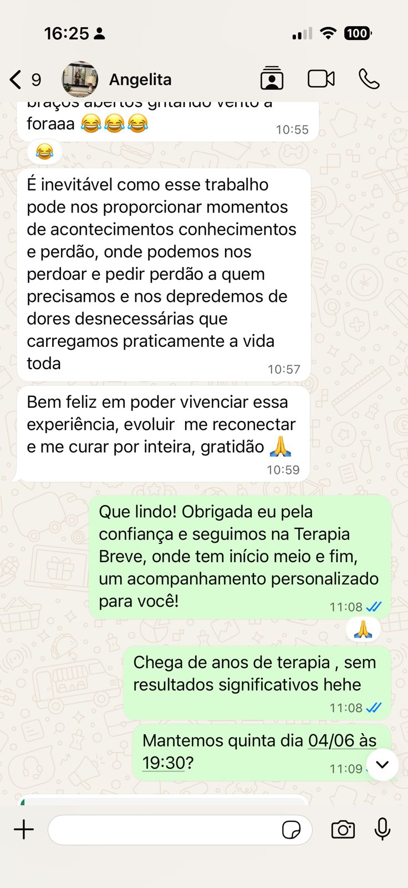
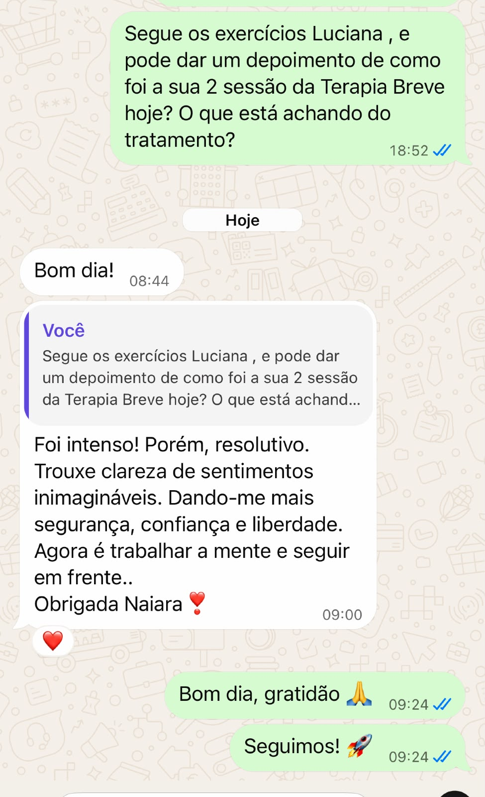
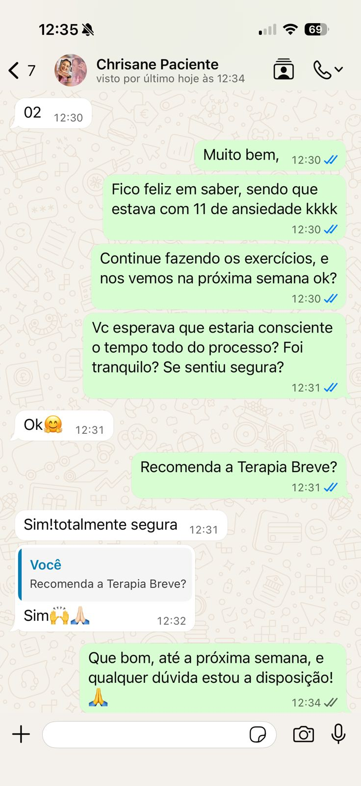

Uma única sessão equivale a 2 anos de Terapia convencional porque ela age na raiz do problema e resolve de forma pontual!


Porque a terapia breve é diferente e rápida?
Você já percebeu que… por mais que sua vida “funcione” por fora, por dentro algo parece travado?
Como se existisse uma força invisível te mantendo no mesmo lugar sem prazer, sem direção, sem energia.
A Terapia Breve existe exatamente para isso. Ela não age no “sintoma” mas na causa raiz do bloqueio, na situação que instalou o aprendizado errado no seu inconsciente para te paralisar, mesmo quando tudo em você quer avançar.
Quando essa origem é acessada e descongelada (reintegrada), algo muda de verdade: Você volta a sentir clareza, confiança e um poder interno real.
Mas não é motivação momentânea.
É reconfiguração mental profunda.
E então surge aquela sensação que talvez você tenha esquecido ou nunca sentido: “eu consigo”, “eu posso”, “eu sou capaz”, “eu dou conta.”
Um estado de realização que, pra muitos, é novo.
Mas pra você… vai ser o reencontro com quem sempre foi e só se perdeu ao longo dos anos.
Entrarei em contato pelo WhatsApp em até 24 horas e te encaminharei a anamnese: um questionário de perguntas, uma espécie de Mapa da vida para saber detalhes sobre sua história (perguntas que revelam mais sobre você do que imagina). Após isso agendaremos sua sessão o mais rápido possível e será on line!
Após analisar a sua Anamnese na sessão REVELAREI qual é a sua raiz e conversaremos. Após isso iremos para a parte mais importante que é a PRÉ TERAPIA BREVE: Um momento único de profundo onde tudo fará sentido sentindo o alívio de você sabe agora o motivo de estar assim e como resolver DEFINITIVAMENTE!
E com base no que surgir durante a sessão através da anamnese, conversa e aplicação da pré Terapia eu vou te apresentar um processo de direcionamento e acompanhamento exclusivo. Esse processo vai incluir poucas sessões porque se trata de uma Terapia focada independente do que seja o seu problema. E ao sair da sessão você terá uma nova visão e o caminho claro para resolver o seu problema de forma definitiva!

De R$497.00
Por: 6x
55,72
R$ 297 á vista
SIM, QUERO AGENDAR MINHA SESSÃO.Estar aqui agora não é coincidência
Quantas vezes você sentiu que estava perto de mudar, mas algo te parou?
Se chegou você até aqui, isso não foi por acaso, acredito que esse pode ser o sinal que você tanto pediu que aparecesse para você.
Não procrastine mais.
Prazer, eu sou Naiara Mello.
Tenho 40 anos, sou casada e acredito profundamente que ninguém nasceu para apenas sobreviver aos dias.
Além da minha trajetória profissional, também vivo os desafios e as bênçãos da maternidade. Sou mãe de um adolescente de 17 anos com TDAH e mãe de coração de um menino de 8 anos no espectro autista. Essas experiências ampliaram ainda mais o meu olhar sobre saúde emocional, acolhimento, resiliência e a importância de cuidar de quem cuida.
A minha missão nasceu da minha própria história. Eu também vivi a ansiedade, conheci o medo, a exaustão emocional e a sensação de apenas sobreviver aos dias. Foi através da Terapia Breve que consegui identificar e tratar a causa raiz do meu sofrimento, recuperar a minha vida e reencontrar a paz que parecia impossível.
Sou Hipnoterapeuta, especialista em Neuroterapia e Hipnose baseada em Neurociências, especialista em Dependência Emocional e Radiestesista, com formação e certificação reconhecida internacionalmente pela Neuroscience International Academy LLC (EUA). Ao longo da minha trajetória, também busquei diversas formações e abordagens complementares voltadas ao desenvolvimento humano, ao autoconhecimento e à transformação emocional.
Sou apaixonada pelo desenvolvimento humano e acredito que, quando compreendemos a origem dos nossos padrões emocionais, é possível transformar dores em aprendizado, recuperar a confiança em nós mesmos e construir uma vida mais leve e consciente.
Atendo presencialmente em meu consultório em Itajaí, Santa Catarina, mas o meu principal foco é o atendimento online, acompanhando pessoas do Brasil e de diversos países, oferecendo um espaço seguro, acolhedor e confidencial para quem deseja compreender e tratar a causa raiz dos seus conflitos emocionais.
Além dos atendimentos individuais, sou criadora do Portal Consciência Criadora, um projeto de tratamentos coletivos que há meses vem auxiliando pessoas em processos de autoconhecimento, desenvolvimento emocional e expansão da consciência.
Hoje, tenho a honra de caminhar ao lado de pessoas que desejam deixar de apenas sobreviver para voltar a viver com mais paz, liberdade, equilíbrio emocional e propósito.
Porque eu acredito que a transformação é possível. E, muitas vezes, tudo o que precisamos é do acolhimento certo e de alguém que nos ajude a enxergar o caminho de volta para nós mesmos.
De R$ 497.00
Por: 6x
55,72
R$ 297 á vista